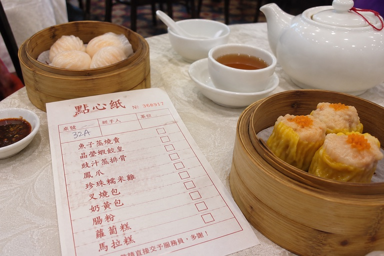

Dim Sum for Students: Where to Go and How to Order
Yum cha (“drink tea”) means going for dim sum. It's the meal you'll have most with new friends.
How ordering works
Ordering works in one of two ways:
- Tick-sheets. A paper menu where you write how many of each dish you want. Easiest if you don't speak Cantonese, since many have English or photos.
- Push carts. Aunties wheel bamboo steamers around and you point. More fun, harder to find now.

A safe first order
- Har gow: shrimp dumplings in a clear wrapper
- Siu mai: open pork and shrimp dumplings
- Char siu bao: steamed BBQ pork buns
- Cheung fun: rice noodle rolls with shrimp or beef
- Lo mai gai: sticky rice in a lotus leaf
- Egg tarts: to finish
Two people with four dishes each plus tea costs about HK$120–180. Go on a weekday afternoon, not Sunday noon. Same food, half the queue.
Dim sum etiquette
- Tap two fingers on the table when someone pours your tea. It means “thank you”.
- Pour for others first, then yourself.
- Leave the teapot lid open or tilted when you need more hot water. Staff will refill it.
- There is a tea charge of a few dollars per person. It's normal, not a scam.